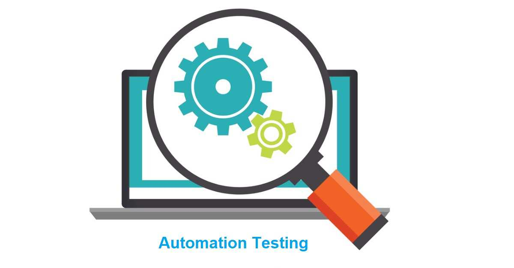
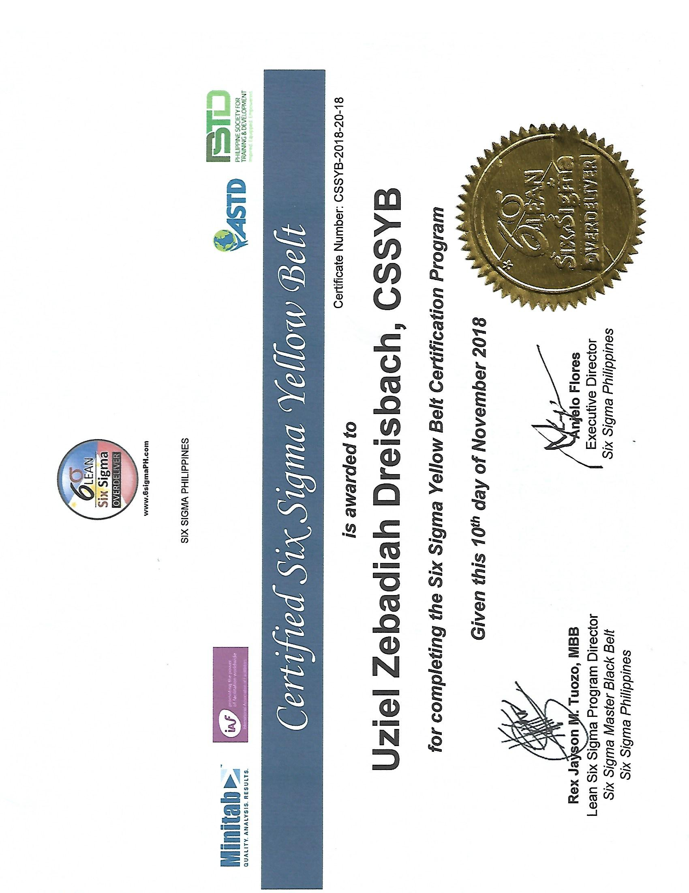
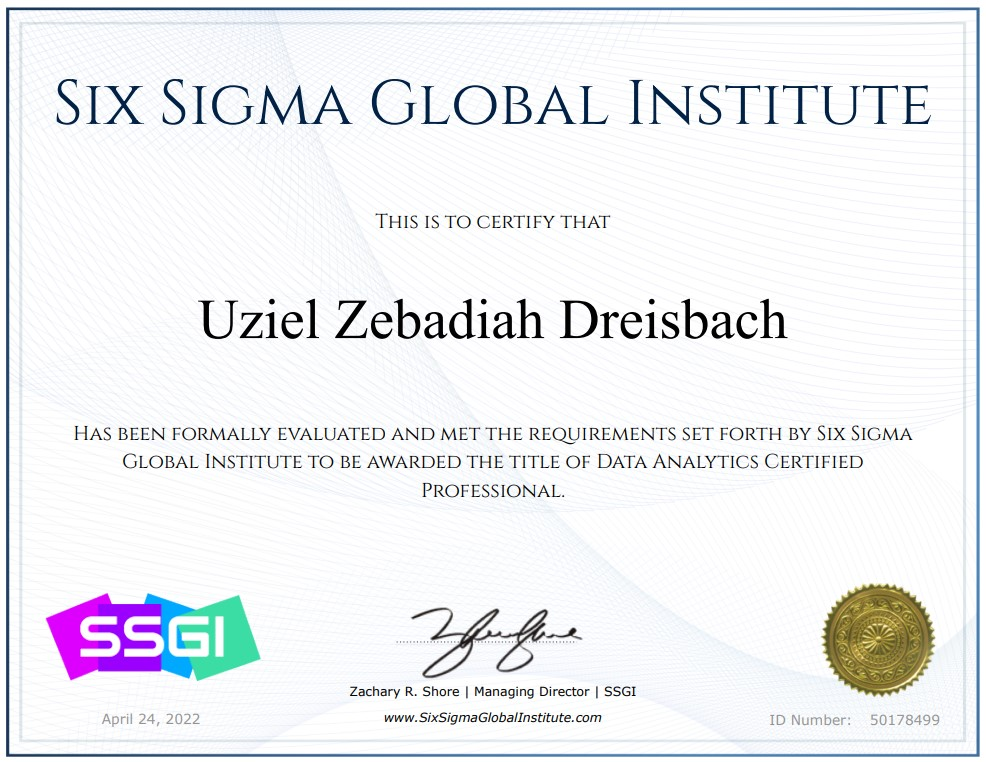
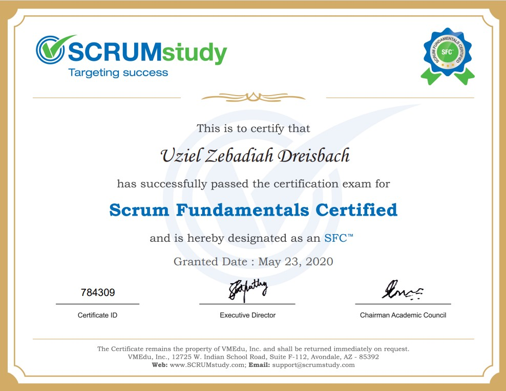

Hello.
I am Uziel Dreisbach and I'm an Automation Tester.
Skills.

Web Automation Testing
Developing Automated Tests is my main skill! I develop Web Automation Tests using technologies like Python, Selenium (WebDriverIO), PyTest, Cypress, and Puppeteer!
Data Science and Machine Learning
I started learning Data Science and Machine Learning out of curiousity and I loved it! I would love to work on this field someday!
Certifications.

Certified Selenium Developer
I am a Certified Selenium Developer, certified by LambdaTest.

Certified Lean Six Sigma Yellow Belt
I am a Certified Lean Six Sigma Yellow, certified by Six Sigma Philippines.

Certified Data Analyst
I am a Certified Data Analyst, certified by Six Sigma Global Institute.

Scrum Fundamentals Certified
I am a Certified Lean Six Sigma Black Belt, certified by Six Sigma Academy Amsterdam